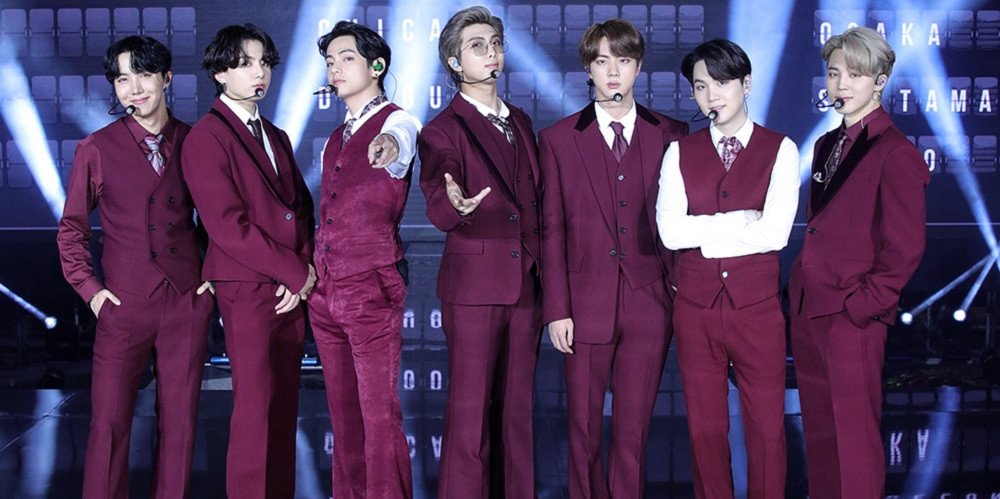
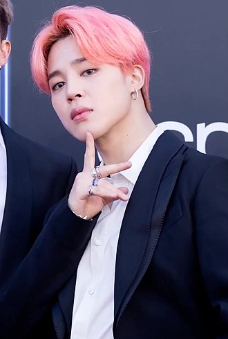
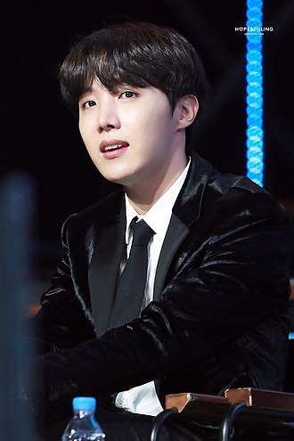
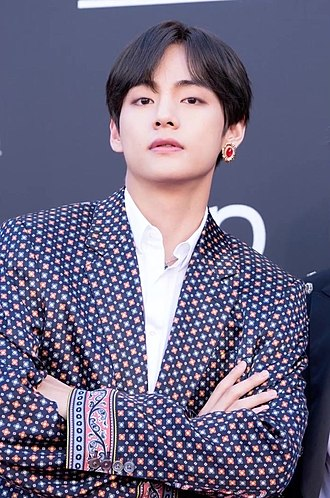

ABOUT BTS
The group's name, BTS, stands for the Korean expression Bangtan Sonyeondan (Korean: 방탄소년단; Hanja: 防彈少年團), literally meaning "Bulletproof Boy Scouts". According to member J-Hope, the name signifies the group's desire "to block out stereotypes, criticisms, and expectations that aim on adolescents like bullets". In Japan, they are known as Bōdan Shōnendan (防弾少年団), which translates similarly.In July 2017, BTS announced that their name would also stand for "Beyond the Scene" as part of their new brand identity. This extended their name to mean "growing youth BTS who is going beyond the realities they are facing, and going forward."
Debuted in 2013. BTS, which won the Korean Rookie of the Year award,
has grown into the best boy group representing Korea in both name and Today, he has made a name for himself as a world-renowned artist, 1999, not only in Asia but also around the world, including North America, Europe, South America, and the Middle East. This is evidenced by the record of the world's leading music charts such as Billboard in the US, official charts in the UK, Oricon in Japan, iTunes, Spotify and Apple Music, and is also breaking record numbers in CD sales, MV views, SNS indexes, etc. He also continues to hold stadium tours and maintain his position as a world-leading artist in the global concert market. He has exerted good influence through speeches at the United Nations and the LOVE MYSELF.
September 2017
Korean 5th album "LOVE YOURSELF Sung 'Her'" released
・ Korean singer first U.S. Billboard 'Hot100
(85th)','Billboard200(7th)' simultaneous rank
・ Korean singer first U.S. Billboard 'Hot100','Billboard2
00'4 consecutive weeks chart-in, 'Billboard200' 6
consecutive weeks
chart-in.
・ 73 countries around the world iTunes 'Album
Chart' 1st
place
・ Korean singer first Spotify 'Global Top 50' record ・
Uk Official chart 90th place record korean singer highest
record
August 2017
Newyork TIMES Us What Music Do Americans Love the
Most? Selected as 50 Detailed Fan Maps
July 2017
Japan 2017 Oricon First Half Singles Ranking 'Blood,
Sweat and Tears -Japanese ver. 11th Place
June 2017
Selected as TIME The 25 Most Initial People on the
Internet in the U.S.
October 2016
Korean 2nd album WINGS ranks 26th on Billboard 200
chart,
1st record for Korean artists
September 2016
Japan's 2nd album "YOUTH" ranked no. 1 in the Oricon
weekly album rankings for the first time in the history of
the HIPHOP Group overseas
August 2016
a-nation island & stadium fes. 2016 powered by dTV
August 2015
"SUMMER SONIC 2015" appearance
June 2015
4th single "FOR YOU" won 1st place in Oricon weekly
single ranking
June 4, 2014
Debuted in Japan with "NO MORE DREAM-Japanese Ver.
KIM NAM-JOON
(Korean: 김남준; born September 12, 1994),better known by his stage name RM (formerly Rap Monster), is a South Korean rapper, songwriter, and record producer. He is the leader of the South Korean boy group BTS. In 2015, he released his first solo mixtape, RM. In October 2018, his second mixtape, Mono, was the highest charting album by a Korean soloist on the Billboard 200 chart, having peaked at 26. He has recorded with artists such as Wale, Younha, Warren G, Gaeko, Krizz Kaliko, MFBTY, Fall Out Boy, Primary, and Lil Nas X. RM selected the name "Rap Monster" during his time as an idol trainee. Though commonly misunderstood that the name means that he "raps like a monster", it actually derives from the lyrics of a song he wrote, inspired by San E's "Rap Genius". The lyrics contained a segment where San E declares he should be called a "rap monster" as he "raps non-stop".He adopted the stage name because he felt it was "cool". RM has described himself as having a love-hate relationship with the name, feeling that it was not selected for being of "incredible value" to him.
He formally changed his stage name to "RM" in November 2017, as he determined that "Rap Monster" was no longer representative of who he was or the music that he creates. In an interview with Entertainment Tonight RM stated that "[the name] could symbolize many things. It could have more spectrums to it." "Real Me" was provided as a possible current meaning.
MIN YOON-GI
(Korean: 민윤기; born March 9, 1993), better known by his stage names Suga (stylized as SUGA) and Agust D. is a South Korean rapper, songwriter, and record producer. Managed by Big Hit Entertainment, he debuted as a member of the South Korean pop idol group BTS in 2013. In 2016, he released his first solo mixtape, Agust D. In 2018, he re-released the mixtape for digital purchase and streaming. The reissue reached number three on Billboard's World Albums Chart. In 2020, he released his second solo mixtape, D-2. Commercially, the mixtape peaked at number 11 on the US Billboard 200, number seven on the UK Albums Chart, and number two on Australia's ARIA Album Chart. The Korea Music Copyright Association attributes over 100 songs to Suga as a songwriter and producer, including Suran's "Wine" which peaked at number two on the Gaon Music Chart and won best Soul/R&B track of the year at the 2017 Melon Music Awards.
The stage name Suga (슈가) is derived from the first syllables of the term shooting guard (슈팅 가드), the position he played in basketball as a student. He adopted the alias Agust D in 2016 for his mixtape, which is derived from the initials DT, short for his birthplace, Daegu Town, and "Suga" spelled backwards.

PARK JI-MIN
(Korean: 박지민; born on October 13, 1995), better known mononymously as Jimin, is a South Korean singer, songwriter, and dancer. In 2013, he debuted as a member of the South Korean boy band BTS, under the record label Big Hit Entertainment.
His immediate family includes mother, father, and a younger brother. When he was a child, he attended Busan's Hodong Elementary School and Yonsan Middle School. During middle school, he attended Just Dance Academy and learned popping and locking dance. Prior to becoming a trainee, Jimin studied contemporary dance at Busan High School of Arts and was a top student in the modern dance department.After a teacher suggested he audition with an entertainment company, it led him to Big Hit Entertainment. Once he passed the auditions in 2012, he transferred to Korean Arts High School, graduating in 2014. Jimin is currently enrolled at Global Cyber University.

JUNG HO-SEOK
(Korean: 정호석; born February 18, 1994), better known by his stage name J-Hope (stylized as j-hope), comes from his desire to represent hope for fans, as well as to be "the hope of BTS." It is also a reference to the myth of Pandora's box, as after the box was opened and all the evils inside were released to the world, the only thing left was hope.is a South Korean rapper, songwriter, dancer, and record producer. In 2013, J-Hope made his debut as a member of South Korean boy band BTS, managed under Big Hit Entertainment.
J-Hope released his first solo mixtape, Hope World, worldwide on March 1, 2018. The album was met with a positive reception. His debut at number 63 (and subsequent peak at number 38) made him the highest-charting solo Korean artist on the Billboard 200 at the time of the mixtape's release. On September 27, 2019, he released his song ”Chicken Noodle Soup” featuring Becky G. On October 12, 2019, the solo single debuted at No. 81 on US Billboard Hot 100, which made him the first member of BTS with a hot 100 hit under his own name.

KIM TAE-HYUNG
(Korean: 김태형; born December 30, 1995) in the Seo District of Daegu, South Korea, also known by his stage name V, is a South Korean singer, songwriter, and actor. He is a vocalist of the South Korean boy group BTS.
He is the eldest of three children, with a younger brother and sister. V first aspired to be a professional singer in elementary school,and eventually began taking saxophone lessons in early middle school as a means of pursuing the career. V's father agreed with his journey on learning how to play the saxophone. V initially became a trainee for Big Hit Entertainment after passing an audition in Daegu.
After graduating from Korean Arts High School in 2014, V enrolled in Global Cyber University.

JEON JUNG-KOOK
(Korean: 전정국; born September 1, 1997) in Busan, South Korea, better known mononymously as Jungkook, is a South Korean singer and songwriter. He is a member of and vocalist in the South Korean boy band BTS. His family consists of his parents and an elder brother. He attended Baekyang Elementary and Middle School in Busan. When he became a trainee, he transferred to Singu Middle School in Seoul.Jungkook initially had dreams of becoming a badminton player when he was young, but after seeing G-Dragon perform "Heartbreaker" on television, it influenced him to want to become a singer.
Jungkook auditioned for the South Korean talent show Superstar K during its auditions in Daegu.Though he was not selected, he received casting offers from seven entertainment companies. He eventually chose to become a trainee under Big Hit Entertainment after seeing RM, now his fellow band member and leader in BTS, perform. To work on his dance skills in preparation for debut, he went to Los Angeles during the summer of 2012 to receive dance training from Movement Lifestyle. In June 2012, he appeared in Jo Kwon's "I'm Da One" music video and also worked as a backup dancer for Glam before his debut. He graduated from Seoul's School of Performing Arts, an arts high school, in 2017. In November 2016, he decided to forgo taking the CSATs, Korea's nationwide university entrance exam, and is currently enrolled at Global Cyber University along with BTS members RM, J-Hope, Suga, V and Jimin.
KIM SEOK-JIN
(Korean: 김석진; born December 4, 1992), also known by his stage name Jin, is a South Korean singer, songwriter, and member of the South Korean boy band BTS since June 2013. Kim was scouted for the group while in university and joined Big Hit Entertainment as an actor, eventually transitioning to a Korean idol. Kim has co-written and released three solo tracks withBTS: "Awake" (2016), "Epiphany" (2018), and "Moon" (2020), all of which have charted on South Korea's Gaon Digital Chart. In 2019, Kim released his first independent song, the digital track "Tonight". He also appeared on the 2016 Hwarang: The Poet Warrior Youth soundtrack alongside BTS member V. Kim has received critical praise for his falsetto and emotional range as a singer.
Apart from singing, Kim has also appeared as a host on multiple South Korean music programs from 2016 to 2018. In 2018, he was awarded the fifth-class Hwagwan Order of Cultural Merit by the President of South Korea along with the other members of BTS, for his contributions to Korean culture. after passing an audition in Daegu.
While in junior high school, Kim was scouted by South Korean K-pop agency SM Entertainment off the street, but he rejected the offer at the time. He initially intended to be an actor, attending Konkuk University and graduating with a degree in art and acting on February 22, 2017. He enrolled in graduate school at Hanyang Cyber University, to pursue studies in areas other than music.